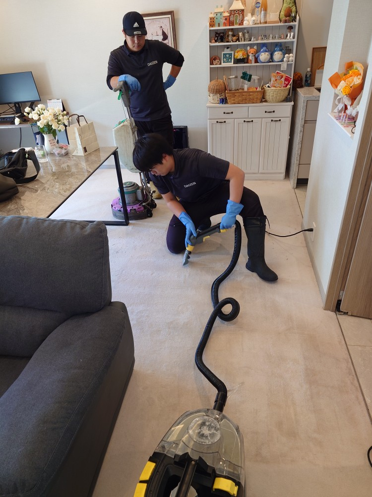
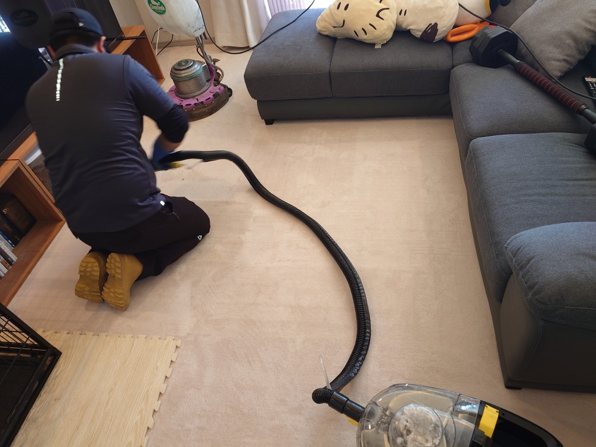
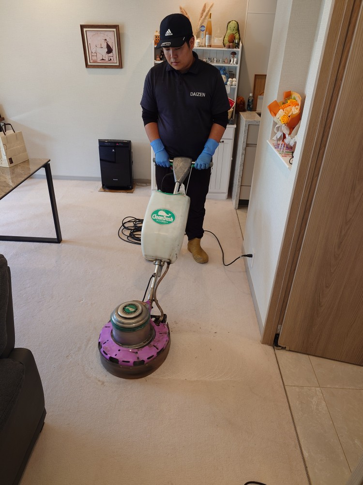
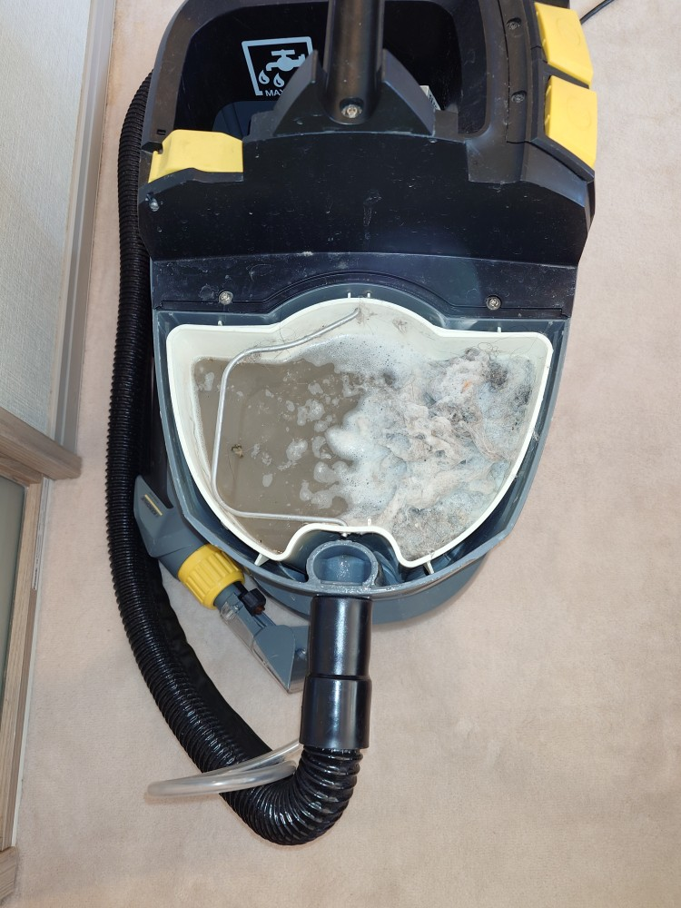

世田谷区等々力のSさんご自宅、ワンちゃん、猫ちゃんカーペットクリーニングをしました！

世田谷区等々力のSさんご自宅のカーペットクリーニングをしました！ワンちゃん、猫ちゃんが一緒に暮らしていらっしゃる、素敵なご自宅のリビングを中心に、室内のカーペットの隅々迄、ドイツ製専用薬剤とドイツ製リンサー機器で、徹底的に除菌洗浄クリーニングをしました！すっかり綺麗になり、気持ちよいカーペットになりました！ありがとうございました！


